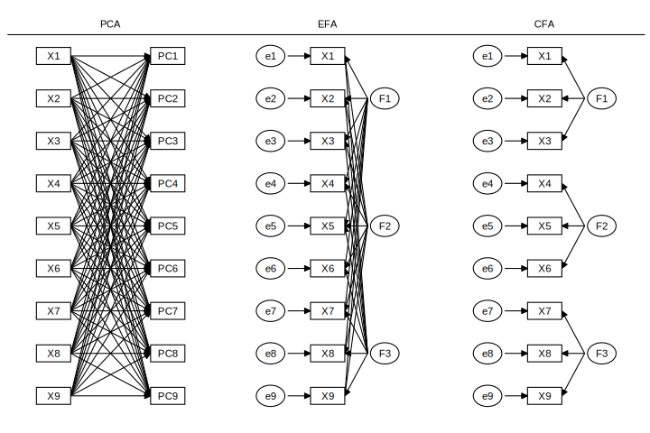
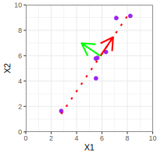
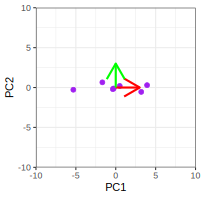
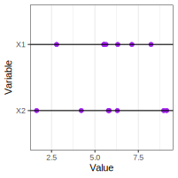
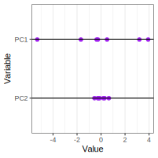
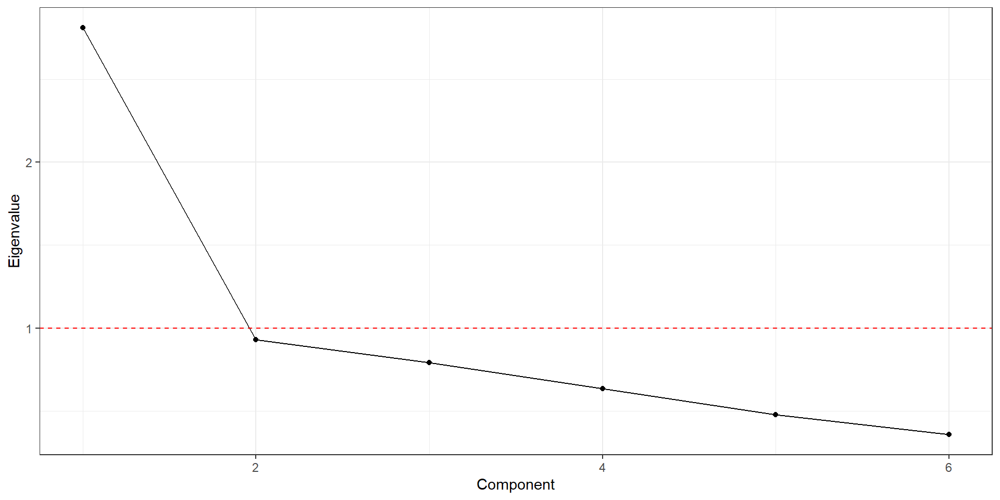
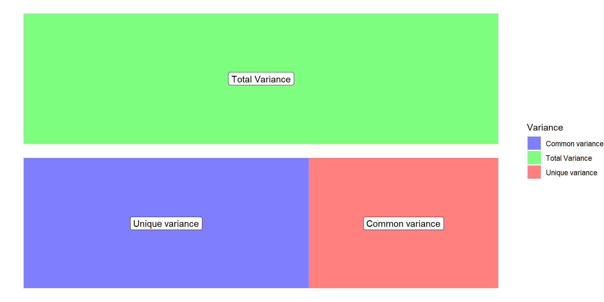
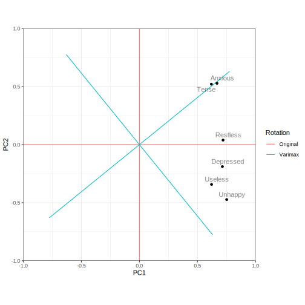

| Anxious | Tense | Restless | Depressed | Useless | Unhappy | |
|---|---|---|---|---|---|---|
| Anxious | 1.00 | 0.45 | 0.44 | 0.31 | 0.31 | 0.26 |
| Tense | 0.45 | 1.00 | 0.30 | 0.33 | 0.26 | 0.28 |
| Restless | 0.44 | 0.30 | 1.00 | 0.45 | 0.25 | 0.47 |
| Depressed | 0.31 | 0.33 | 0.45 | 1.00 | 0.28 | 0.52 |
| Useless | 0.31 | 0.26 | 0.25 | 0.28 | 1.00 | 0.50 |
| Unhappy | 0.26 | 0.28 | 0.47 | 0.52 | 0.50 | 1.00 |
Psychometrics II: Dimension Reduction
Caspar J. van Lissa
2023-08-04
Dimension Reduction
Recap
Last week, we discussed how you can use multiple items to measure a single underlying construct
Today, we will look at three methods for reducing multiple items to a smaller number of variables
Overview
We will discuss three techniques, and you will learn two of them
- Principal Components Analysis (PCA)
- Exploratory Factor Analysis (EFA)
- Confirmatory Factor Analysis (CFA)
Throughout this lecture, assume that we have \(k\) items and \(n\) participants
Principal Component Analysis (PCA)
- PCA is a data rotation technique
- It transforms \(k\) original items into \(k\) uncorrelated components
- These components are linear combinations of the original items
- You can use PCA for dimension reduction
- If a small number of components explain nearly all of the variance in the items, you can use only those to represent the variance in the items
- E.g., 10 items about extraversion, 1 component explains most of the variance - keep that 1 component and drop the remaining 9
Exploratory Factor Analysis (EFA)
- EFA is a latent variable method
- Assumes that latent variables cause people’s responses to the items
- E.g., extraversion causes people to respond positively to questions about partying and socializing
- EFA models the item covariance matrix as a function of a fixed number of factors
- EFA is exploratory because all items are allowed to load on (contribute to) all factors
- Determine number of factors
- Determine which items belong to which factor
- In practice, for good questionnaires, items will load highly on one factor and low on all others
Confirmatory Factor Analysis
- CFA assumes a “measurement model”
- Known number of factors
- Known which items measures which factor
- E.g., 10 items each for 5 personality factors; assume that each set of items only contributes to its factor
- Test whether a hypothesized measurement model fits the data well
- This is outside of the scope of this course, but important to know it exists
Key Differences
- Purpose:
- PCA is used for dimensionality reduction
- EFA explores the relationships of items with latent constructs
- CFA tests a theory about which items relate to which latent constructs
- Assumption:
- PCA does not assume latent variables. Dropping components assumes that those components are irrelevant or error variance
- EFA assumes that all items are caused by a smaller number of latent variables
- CFA assumes that specific items are caused by specific latent variables
- Interpretation:
- PCA components are mathematical constructs with no further meaning.
- EFA factors represent theoretical latent constructs.
- CFA factors represent known theoretical latent constructs.
Visual comparison
Principal Components Analysis
What is PCA?
- A technique that rotates the data so that the largest amount of variance aligns with the first component, secondmost variance with the second component, etc
- Components are by definition uncorrelated
- Used for dimensionality by dropping components that explain little variance + Can we summarize many items using few components without losing much information?
- Derived using “simple” matrix algebra.
Demonstration




Ways to understand PCA
- Rotation of data
- Way to reproduce the correlation matrix
- The first component best reproduces the correlation matrix R
- Adding each further component reproduces it better
- Using all components perfectly reproduces the correlation matrix
- Lower-dimensional representation of the data (i.e., explain k items with <k components)
- Lossy compression of data
Compressing Photo with PCA
Each row of image treated as a “variable”, 1875 rows
Example
Data on six items related to mental health in 300 individuals
Correlation matrix:
How to Apply PCA
- Start with equal number of Components as Items (e.g., 6 Items: 6 Components)
- Rotate the data, so that Component 1 explains most variance, Component 2 secondmost variance, etc
- Drop all Components that do not explain “a lot” of variance, e.g., drop 2-6
- You now explain most of the variance with a smaller set of components: Dimension reduction
Eigenvalues
Eigenvalue: The eigenvalue \(\lambda\) reflects how much variance a component explains.
- Each item contributes 1 to the total variance
- The sum of all Eigenvalues is equal to the number of items \(k\), so \(\sum_{j = 1}^k \lambda_j = k\)
- The proportion of variance in items explained by each component is equal to the Eigenvalue divided by the number of items, so \(r^2 = \lambda / k\)
Number of Components 1
Strategy 1: Kaiser’s criterion
- All components with Eigenvalue > 1
- I.e., this component explains more variance than a single item
- Objective but influenced by characteristics of your dataset
- Not good in all cases
How many factors would we choose for our example, based on this rule?
Example: Kaiser’s criterion
| Component | Eigenvalue | Variance | Cumulative |
|---|---|---|---|
| 1 | 2.81 | 46.85 | 46.85 |
| 2 | 0.93 | 15.49 | 62.34 |
| 3 | 0.79 | 13.19 | 75.53 |
| 4 | 0.63 | 10.57 | 86.10 |
| 5 | 0.48 | 7.95 | 94.05 |
| 6 | 0.36 | 5.95 | 100.00 |
Number of components 2
Strategy 2: Catell’s scree plot
- Choose the number of factors for which the Eigenvalue is above the “elbow” (inflection point)
- Draw a line through the scree
- Subjective, but often very helpful
Example: Scree plot
Number of components 3
Strategy 3: Horn’s Parallel Analysis (1965)
- Conduct many PCAs on random (fake) data with same number of cases and variables as real data
- Retain components whose Eigenvalue exceeds the 95th percentile of Eigenvalues of random data
- This is the best data-driven strategy
Example: Parallel analysis
| PC | Mean EV | 95 percentile | Observed | |
|---|---|---|---|---|
| 1 | 1.20 | 1.27 | 2.81 | |
| 2 | 1.10 | 1.17 | 0.93 | |
| 3 | 1.02 | 1.06 | 0.79 | |
| 4 | 0.96 | 1.00 | 0.63 | |
| 5 | 0.90 | 0.94 | 0.48 | |
| 6 | 0.82 | 0.88 | 0.36 |
Number of components 4
Strategy 4: Use theoretical knowledge about the number of components underlying the data
We measured mental health using 6 indicators
- But I know that these relate to anxiety and depression (2 components)
- Note that in our example, the data-driven criteria do not give 2 components!
PCA Loadings
- “Component Matrix”
- Correlations between the original variable \(i\) and the component \(j\), \(L_{i,j}\)
- Range from -1 to +1
- They help us interpret the PCA components
| PC1 | PC2 | PC3 | PC4 | PC5 | PC6 | |
|---|---|---|---|---|---|---|
| Anxious | 0.67 | 0.53 | 0.09 | 0.35 | 0.31 | -0.22 |
| Tense | 0.62 | 0.52 | 0.21 | -0.47 | -0.27 | 0.06 |
| Restless | 0.72 | 0.04 | -0.43 | 0.37 | -0.31 | 0.23 |
| Depressed | 0.71 | -0.19 | -0.38 | -0.35 | 0.41 | 0.14 |
| Useless | 0.62 | -0.34 | 0.64 | 0.15 | 0.07 | 0.25 |
| Unhappy | 0.75 | -0.47 | -0.01 | -0.07 | -0.20 | -0.41 |
Eigenvalues
- Column sums of squared loadings are the Eigenvalues
- E.g., column sum of squared loadings for the first component = first Eigenvalue
Communalities
Communality \(h_{j}^2\): proportion of variance in an item explained by \(m\) components.
Communality \(h_{j}^2\) for item \(j\) is calculated as the row sum of squared loadings. For \(m\) selected components:
\[ h_j^2 = \sum_{i = 1}^m L_{j,i}^2 \]
- When \(m\) is equal to number of items \(k\), communalities are all 1
- Components are just a rotation of the data, so 100% of variance is explained
- When \(m\) is smaller than \(k\), the communality is < 1
Communalities example
| PC1 | PC2 | PC3 | PC4 | PC5 | PC6 | Explained | |
|---|---|---|---|---|---|---|---|
| Anxious | 0.45 | 0.28 | 0.01 | 0.12 | 0.09 | 0.05 | 1 |
| Tense | 0.38 | 0.27 | 0.04 | 0.22 | 0.07 | 0.00 | 1 |
| Restless | 0.52 | 0.00 | 0.19 | 0.14 | 0.10 | 0.05 | 1 |
| Depressed | 0.51 | 0.04 | 0.15 | 0.12 | 0.17 | 0.02 | 1 |
| Useless | 0.39 | 0.12 | 0.41 | 0.02 | 0.01 | 0.06 | 1 |
| Unhappy | 0.56 | 0.22 | 0.00 | 0.00 | 0.04 | 0.17 | 1 |
Communalities 2 components
| PC1 | PC2 | Explained | |
|---|---|---|---|
| Anxious | 0.45 | 0.28 | 0.73 |
| Tense | 0.38 | 0.27 | 0.66 |
| Restless | 0.52 | 0.00 | 0.52 |
| Depressed | 0.51 | 0.04 | 0.55 |
| Useless | 0.39 | 0.12 | 0.50 |
| Unhappy | 0.56 | 0.22 | 0.79 |
Unicity
Unicity: The variance NOT explained by \(m\) components.
If \(m\) is equal to the number of items \(k\), unicity is 0
If \(m\) is smaller than \(k\), the unicity is one minus the communality
- E.g. below: unicity of “Anxious” is \(1-.73 = .27\)
| PC1 | PC2 | Explained | |
|---|---|---|---|
| Anxious | 0.45 | 0.28 | 0.73 |
| Tense | 0.38 | 0.27 | 0.66 |
| Restless | 0.52 | 0.00 | 0.52 |
Reproduced correlations
Reproduced correlation between two variables is equal to the sum - over components/factors - of the product of the unrotated loadings on those components
E.g., for two components:
\(\hat{r}_{Anx,Tense} = (L_{Anx,PC1}*L_{Tense,PC1}) + (L_{Anx,PC2}*L_{Tense,PC2})\)
Where \(r\) is the correlation and \(L\) is the loading
| PC1 | PC2 | |
|---|---|---|
| Anxious | 0.67 | 0.53 |
| Tense | 0.62 | 0.52 |
| Restless | 0.72 | 0.04 |
Reproduced correlations
For two principal components (Diagonal: communalities)
| Anxious | Tense | Restless | Depressed | Useless | Unhappy | |
|---|---|---|---|---|---|---|
| Anxious | 0.73 | 0.69 | 0.50 | 0.38 | 0.23 | 0.25 |
| Tense | 0.69 | 0.66 | 0.47 | 0.34 | 0.21 | 0.22 |
| Restless | 0.50 | 0.47 | 0.52 | 0.51 | 0.43 | 0.52 |
| Depressed | 0.38 | 0.34 | 0.51 | 0.55 | 0.51 | 0.63 |
| Useless | 0.23 | 0.21 | 0.43 | 0.51 | 0.50 | 0.63 |
| Unhappy | 0.25 | 0.22 | 0.52 | 0.63 | 0.63 | 0.79 |
Residual correlations
Difference between observed and reproduced correlations: \(R_{resid} = R - \hat{R}\)
| Anxious | Tense | Restless | Depressed | Useless | Unhappy | |
|---|---|---|---|---|---|---|
| Anxious | -0.24 | -0.06 | -0.06 | 0.08 | 0.01 | |
| Tense | -0.24 | -0.17 | -0.02 | 0.06 | 0.06 | |
| Restless | -0.06 | -0.17 | -0.06 | -0.18 | -0.06 | |
| Depressed | -0.06 | -0.02 | -0.06 | -0.23 | -0.11 | |
| Useless | 0.08 | 0.06 | -0.18 | -0.23 | -0.13 | |
| Unhappy | 0.01 | 0.06 | -0.06 | -0.11 | -0.13 |
Reproduced correlations
Four principal components (Diagonal: communalities)
| Anxious | Tense | Restless | Depressed | Useless | Unhappy | |
|---|---|---|---|---|---|---|
| Anxious | 0.86 | 0.54 | 0.59 | 0.22 | 0.35 | 0.23 |
| Tense | 0.54 | 0.92 | 0.20 | 0.43 | 0.27 | 0.25 |
| Restless | 0.59 | 0.20 | 0.85 | 0.54 | 0.21 | 0.50 |
| Depressed | 0.22 | 0.43 | 0.54 | 0.81 | 0.21 | 0.65 |
| Useless | 0.35 | 0.27 | 0.21 | 0.21 | 0.93 | 0.61 |
| Unhappy | 0.23 | 0.25 | 0.50 | 0.65 | 0.61 | 0.79 |
Residual correlations 4 components
| Anxious | Tense | Restless | Depressed | Useless | Unhappy | |
|---|---|---|---|---|---|---|
| Anxious | -0.10 | -0.15 | 0.09 | -0.03 | 0.03 | |
| Tense | -0.10 | 0.10 | -0.10 | -0.01 | 0.03 | |
| Restless | -0.15 | 0.10 | -0.10 | 0.04 | -0.03 | |
| Depressed | 0.09 | -0.10 | -0.10 | 0.07 | -0.14 | |
| Useless | -0.03 | -0.01 | 0.04 | 0.07 | -0.12 | |
| Unhappy | 0.03 | 0.03 | -0.03 | -0.14 | -0.12 |
Exploratory Factor Analysis
Example
Data on 12 items related to emotions in 117 individuals
Correlation matrix:
| happy | cheerful | pride | gratitude | love | sad | jealous | worry | stress | anger | guilt | shame | |
|---|---|---|---|---|---|---|---|---|---|---|---|---|
| happy | 1.00 | 0.51 | 0.14 | 0.38 | 0.59 | 0.06 | -0.19 | 0.07 | -0.07 | -0.23 | -0.05 | 0.02 |
| cheerful | 0.51 | 1.00 | 0.29 | 0.47 | 0.56 | 0.14 | -0.01 | 0.33 | 0.07 | 0.03 | 0.08 | 0.17 |
| pride | 0.14 | 0.29 | 1.00 | 0.26 | 0.13 | 0.13 | 0.17 | 0.27 | 0.21 | 0.27 | 0.23 | 0.21 |
| gratitude | 0.38 | 0.47 | 0.26 | 1.00 | 0.33 | -0.02 | -0.12 | 0.21 | -0.02 | 0.01 | 0.17 | 0.23 |
| love | 0.59 | 0.56 | 0.13 | 0.33 | 1.00 | 0.22 | 0.07 | 0.23 | 0.05 | -0.04 | 0.02 | 0.20 |
| sad | 0.06 | 0.14 | 0.13 | -0.02 | 0.22 | 1.00 | 0.52 | 0.25 | 0.17 | 0.32 | 0.30 | 0.29 |
| jealous | -0.19 | -0.01 | 0.17 | -0.12 | 0.07 | 0.52 | 1.00 | 0.35 | 0.35 | 0.56 | 0.41 | 0.37 |
| worry | 0.07 | 0.33 | 0.27 | 0.21 | 0.23 | 0.25 | 0.35 | 1.00 | 0.40 | 0.34 | 0.27 | 0.27 |
| stress | -0.07 | 0.07 | 0.21 | -0.02 | 0.05 | 0.17 | 0.35 | 0.40 | 1.00 | 0.62 | 0.38 | 0.47 |
| anger | -0.23 | 0.03 | 0.27 | 0.01 | -0.04 | 0.32 | 0.56 | 0.34 | 0.62 | 1.00 | 0.50 | 0.45 |
| guilt | -0.05 | 0.08 | 0.23 | 0.17 | 0.02 | 0.30 | 0.41 | 0.27 | 0.38 | 0.50 | 1.00 | 0.57 |
| shame | 0.02 | 0.17 | 0.21 | 0.23 | 0.20 | 0.29 | 0.37 | 0.27 | 0.47 | 0.45 | 0.57 | 1.00 |
Exploratory factor analysis
- Assume the existence of latent variables that cause item responses
- Suitable technique when your theory implies the existence of latent variables
- Seeks to explain covariances/correlations between items
- Unexplained variance is attributed to measurement error
- Aligns with test theory: Suitable technique when you assume that your items measure constructs with error
- Suitable technique when a questionnaire has not been validated yet
- Otherwise, use confirmatory factor analysis
Estimating a Latent Variable Model
- PCA is just data rotation; only requires matrix algebra
- EFA is a model about latent variables; loadings and error variances are unknown parameters that must be estimated

Estimation Methods
- Principal Axis Factoring (PAF)
- Long considered default in SPSS
- Iterative procedure also based in matrix algebra
- Gives a solution even when model is too complex or data are non-normal (but do we want this?)
- Maximum Likelihood (ML)
- Same estimator used for CFA
- Works well when data are multivariate normal
- Does not work when model is too complex
- Offers test of model fit!
Factor Loadings
- “Factor Matrix”
- Correlations between item and factor
- Range from -1 to +1
| FA1 | FA2 | |
|---|---|---|
| happy | 0.11 | 0.75 |
| cheerful | 0.38 | 0.69 |
| pride | 0.39 | 0.15 |
| gratitude | 0.26 | 0.50 |
| love | 0.32 | 0.63 |
| sad | 0.47 | -0.05 |
| jealous | 0.61 | -0.32 |
| worry | 0.55 | 0.09 |
| stress | 0.60 | -0.22 |
| anger | 0.72 | -0.39 |
| guilt | 0.63 | -0.17 |
| shame | 0.66 | -0.05 |
Eigenvalues
Eigenvalues are still the column sums of squared loadings
In PCA, Eigenvalues represent portions of the total variance and sum to the number of indicators \(k\)
- They will always be smaller than the Eigenvalues, because some variance is error variance
- The sum of Eigenvalues is < \(k\)
- Eigenvalues can be negative
- They will differ dependent on the number of extracted factors!
| FA1 | FA2 | |
|---|---|---|
| Column sum | 3.09 | 2.06 |
| Eigenvalues | 3.65 | 2.54 |
Selecting number of Factors
Problem: Eigenvalues depend on number of extracted factors
- You can take a cue from Kaiser’s criterion and Scree plot for PCA
- You can use Horn’s Parallel Analysis (1965), but:
- Difficult to implement in SPSS
- Solution also changes depending on number of chosen factors
Theoretical Knowledge
EFA is a model-based approach, so it makes sense to use theory to guide choice of number of factors
We measured emotions using 12 indicators
- I theorize that these break down into positive and negative emotions (2 factors)
Model Fit Test
If you use factor extraction method “Maximum Likelihood”, you obtain a chi-square model fit test
- A significant test means that the model-implied correlation matrix significantly deviates from the observed correlation matrix
- In other words: Significant test -> bad model!
- This test can be used to evaluate a theoretical model
For our 2-factor example: \(\chi^2(43) = 81.12, p < .001\)
Bayesian Information Criterion
You can compute the BIC from Maximum Likelihood output:
- A relative model fit index that balances model fit (chi-square) and model complexity
- It prefers simple models with good-enough fit
- No absolute cutoff; use it to compare models and choose the one with lowest BIC
Calculate BIC
- Perform EFA with ML estimation for all solutions you want to compare (e.g., 1, 2, 3-factor)
- Write down chi-square values in a spreadsheet
- For each model, calculate degrees of freedom
- \(df = ((k - m)^2 - (k + m))/2\), where \(k\) is the number of items and \(m\) is the number of factors
- For each model, calculate the BIC
- \(BIC = \chi^2 - df ∗ log(n)\)
Example
We have data from 117 participants on 12 emotion indicators
| Factors | Chi2 | df | BIC |
|---|---|---|---|
| 1 | 81.12 | 43 | -123.65 |
| 2 | 238.33 | 54 | -18.83 |
| 3 | 46.28 | 33 | -110.87 |
A one-factor model has the lowest BIC!
Maximum Number of Factors
Problem: You must have fewer model parameters than observed datapoints
Solution: You can use the \(df\) to determine a maximum number of factors!
- A model with \(df < 0\) could not be estimated using ML
- Although it remains possible using other methods (e.g., principal axis factoring), such a model is likely too complex for the data
| 1 | 2 | 3 | 4 | 5 | 6 | 7 | 8 | 9 | 10 | 11 | |
|---|---|---|---|---|---|---|---|---|---|---|---|
| df | 54 | 43 | 33 | 24 | 16 | 9 | 3 | -2 | -6 | -9 | -11 |
Communalities and Unicity
Communality \(h_{j}^2\): proportion of variance in an item accounted for by \(m\) factors.
- PCA can explain 100% of variance in items when using all components, so communality for all components is 1.
- EFA cannot explain 100% of variance in items because some variance is measurement error
- Communalities are always < 1 because of error variance
- Unicity is always larger than 0
- “Initial” estimate of communalities is the squared multiple correlation coefficient with all other items (\(r^2\), so a measure of explained variance)
- Note that this has nothing to do with the EFA model!
Rotation
Interpreting Factor Loadings
Goal: We want to interpret the pattern of factor loadings.
- Are there items that load highly on only one factor?
- Can we try to “name” factors based on high-loading indicators?
- Relates to validity: Relevant items load on the same construct
- We can do this for both PCA and EFA
Factor loadings in the perfect world
| FA1 | FA2 | |
|---|---|---|
| happy | 0 | 1 |
| cheerful | 0 | 1 |
| pride | 0 | 1 |
| gratitude | 0 | 1 |
| love | 0 | 1 |
| sad | 1 | 0 |
| jealous | 1 | 0 |
| worry | 1 | 0 |
| stress | 1 | 0 |
| anger | 1 | 0 |
| guilt | 1 | 0 |
| shame | 1 | 0 |
No doubts which factor an item belongs to
- Perfect loading on only ONE dimension, rest of the loadings 0
- Easy interpretation
But in practice, we don’t get that
Real-life Factor Loadings
| FA1 | FA2 | |
|---|---|---|
| happy | 0.11 | 0.75 |
| cheerful | 0.38 | 0.69 |
| pride | 0.39 | 0.15 |
| gratitude | 0.26 | 0.50 |
| love | 0.32 | 0.63 |
| sad | 0.47 | -0.05 |
| jealous | 0.61 | -0.32 |
| worry | 0.55 | 0.09 |
| stress | 0.60 | -0.22 |
| anger | 0.72 | -0.39 |
| guilt | 0.63 | -0.17 |
| shame | 0.66 | -0.05 |
- FA1 - negative emotions? But what about cheerful and pride?
- FA2 - positive?
Interpreting PCA Loadings
Or from our PCA example, let’s interpret a 2-component solution:
- PC1 - all mental health symptoms?
- PC2 - A bit of anxiety? Low unhappiness?
- This is confusing!
| PC1 | PC2 | |
|---|---|---|
| Anxious | 0.67 | 0.53 |
| Tense | 0.62 | 0.52 |
| Restless | 0.72 | 0.04 |
| Depressed | 0.71 | -0.19 |
| Useless | 0.62 | -0.34 |
| Unhappy | 0.75 | -0.47 |
Introducing Rotation
Rotation: Just like PCA rotates the correlation matrix of the data, rotation rotates the loadings matrix of PCA/EFA until the pattern of loadings is easier to interpret.
- Rotation simplifies and improves interpretability of the loadings
- Rotation applies a linear transformation to the original factor loadings
- Goal is to obtain high loadings for each item on only one factor
- Reducing cross-loadings
Orthogonal rotation
Orthogonal Rotation: Components/factors are uncorrelated with each other.
- The factors are distinct and independent
- High loadings for one factor are not associated with high loadings on another factor
- Most common technique: VARIMAX rotation
- Maximizes the variance of the squared loadings within each factor
- Loadings are either very high or very low, with little in between
- The rotated factor matrix can be interpreted as factor loadings and as correlations between the items and factors
Varimax rotation demo
As a Table
| RC1 | RC2 | |
|---|---|---|
| Anxious | 0.19 | 0.83 |
| Tense | 0.15 | 0.79 |
| Restless | 0.53 | 0.48 |
| Depressed | 0.67 | 0.30 |
| Useless | 0.70 | 0.13 |
| Unhappy | 0.88 | 0.11 |
Oblique Rotation
- Factors are allowed to be correlated
- It’s possible that high loadings for one factor are associated with high loadings for another factor
- In social science, many factors are probably correlated!
- Oblique rotation is considered a sensible default in social science
Oblique Rotation changes loadings
Note: after oblique rotation, factor loadings are no longer item/factor correlations!
Pattern matrix
- Factor loadings
- Each row is a regression equation describing the standardized item as a function of the factors
- \(X_1 = L_{1,1}*F1 + L_{1,2}*F2+\epsilon\)
- The loading of each item is a regression coefficient, controlled for the effect of all other items
Structure matrix
- Bivariate correlations between the items and factors
- \(r_{X_1, F1}\)
- Not controlled for other items
Demonstration Oblimin

As a Table
| PC1 | PC2 | |
|---|---|---|
| Anxious | 0.00 | 0.85 |
| Tense | -0.02 | 0.82 |
| Restless | 0.46 | 0.40 |
| Depressed | 0.65 | 0.18 |
| Useless | 0.72 | -0.02 |
| Unhappy | 0.92 | -0.08 |
For oblique rotations, where the factors are allowed to correlate (oblimin or promax in SPSS), then the loadings and correlations are distinct. The pattern matrix holds the loadings. Each row of the pattern matrix is essentially a regression equation where the standardized observed variable is expressed as a function of the factors. The loadings are the regression coefficients. The structure matrix holds the correlations between the variables and the factors.
Interpretation of a set of oblique factors involves both the pattern and structure matrices, as well as the factor correlation matrix. The latter matrix contains the correlations among all pairs of factors in the solution. It is automatically printed for an oblique solution when the rotated factor matrix is printed.
Gorsuch (1983) and Thompson (1983) describe concepts and procedures for interpreting the factors with these matrices.
Gorsuch, R.L. (1983). Factor Analysis (2nd Ed.). Hillsdale NJ: Erlbaum.
Thompson, B. (2004). Exploratory and Confirmatory Factor Analysis. Washington DC: American Psychological Association.
Which type of Rotation?
Choice depends on theory and research goals:
Trying to reduce multicollinearity? -> Orthogonal rotation
Constructing a scale of likely correlated dimensions? -> Oblique rotation
In this example, it makes theoretical sense that anxiety and depression are correlated
Report Factor/Component Correlations
If we allow factors/components to be correlated, we should report those correlations
In this example, the rotated components (anxiety and depression) correlate \(r = .40\)
Word of Warning
- Rotated loadings can no longer be interpreted as correlations of item with the factor
- Recall that PCA is a specific rotation of the data
- There is only one correct PCA solution for each dataset
- It can exactly reproduce the data
- Rotation loses these properties
- Clearly report that you performed PCA followed by a varimax rotation
Reliability Analysis
If you extract multiple components/factors, you can perform reliability analysis for each subscale
Questionnaires
Is our questionnaire unidimensional? Or are there multiple dimensions?

PCA use cases
To reduce dimensionality of the data when we do not have a theory about underlying latent variables
- E.g., family socio-economic status
- Mother’s education, father’s education
- Mother’s income, father’s income
- Mother’s occupation prestige, father’s occupation prestige
- Is there a latent variable “family socio-economic status” that causes these things?
- Rather, these items all cause (not caused by) family SES
- Use PCA to extract a single dimension that explains most variance in the items
To deal with multicollinearity
EFA Assumption Checks
Multicollinearity
We mostly apply factor analysis when we expect clusters of items to be correlated (=multicollinear)
- Paradoxically, problems arise when multicollinearity is too high
- Especially when multiple items are perfectly linearly dependent
- You can exactly reproduce the score of a variable using other variable(s)
- It becomes difficult to determine the unique contribution of the collinear items to the factor model
We can check for multicollinearity using the determinant
- Determinant between .00001 and 1 is good
- Many items -> smaller determinants
Proportion of Common Variance
Kaiser-Meyer-Olkin (KMO) statistic is an estimate of the proportion of common variance among items
- Higher proportion -> more suitable for factor analysis
| Value | Interpretation |
|---|---|
| 0.00 to 0.49 | unacceptable |
| 0.50 to 0.59 | miserable |
| 0.60 to 0.69 | mediocre |
| 0.70 to 0.79 | middling |
| 0.80 to 0.89 | meritorious |
| 0.90 to 1.00 | marvelous |
Confirmatory Factor Analysis
One word about CFA
If your theory implies a one-factor solution, EFA with ML estimation is the same as CFA
- You can use the Chi-square test to test if your model fits the data well
- It is very sensitive to sample size, so will reject good models
- Alternatively, compute RMSEA - a model fit index that accounts for sample size
- Values < .08 are good
\[ RMSEA = \frac{\sqrt{\chi^2 - df}}{\sqrt{(n - 1)*df}} \] ## Latent Variable Reliability {.smaller}
Recall that Cronbach’s alpha assumes that each items is equally important
- I.e., all factor loadings should be identical
- Factor analysis tests that assumption
- Obviously, it is rarely true
We can compute latent variable reliability, allowing for different factor loadings!
- This is called McDonald’s Omega (or composite reliability)
\[ \omega = \frac{SSL}{SSL+SSR} = \frac{\text{Sum of Squared Loadings}}{SSL + \text{Sum of Squared Residuals}} \]
Calculate SSL as: \(SSL = (\sum_{j=0}^k L_{1,k})^2\) (first sum loadings, then square sum)
Calculate SSR as: \(SSR = 1-\sum_{j=0}^k L_{1,k}^2\) (first square loadings, then sum)
Scale Scores
Scale Scores
You’ve previously learned about:
Sum scores
- \(X = \sum_{j=1}^k x_j\)
- \(X = 1*x_1 + 1*x_2 + \ldots + 1*x_k\)
Mean scores
- \(X = \frac{\sum_{j=1}^k x_j}{k}\)
- \(X = (1*x_1 + 1*x_2 + \ldots + 1*x_k)/k\)
In both of these approaches, all items contribute equally
PCA Scores
Multiply standardized item scores for the j items with j factor loadings
- Sum the result
- E.g.: We have factor loadings .85, .80, .14
- Francis’ standardiz scores 1, 3, and 2 on these variables
- Calculate \((.85*4 + .80*6+.14*5) / (.85^2 + .80^2 + .14^2) = 2.44\)
- Francis’ factor score is 2.44
EFA: Not Uniquely Determined
Computing latent variable scores is not straightforward
- Although we can estimate the EFA model, this does not tell us what the latent variable score of every individual was
- An infinite number of latent variable datasets is consistent with the same EFA model
- There are methods to estimate what individuals’ scores could have been
- Factor scores tell us a person’s relative level on the latent factor
EFA Scores Methods
- Regression method: Ordinary least squares estimate
- Maximize multiple correlation between factor score and common factors
- Are biased estimates of true factor scores
- Even for orthogonal EFA, regression scores for different factors correlate with each other and with all latent factors
- Bartlett method
- Factor scores only correlate with their own latent factor, but still correlate with estimated scores for other factors
- If factor loadings are ~equal
- Might be preferable to just compute mean scores
Everitt, B. S. & Howell, D. C. (2005). DOI:10.1002/0470013192.bsa726
DiStefano, Zhu, & Mindrila (2009). DOI:10.7275/da8t-4g52
Steps for Data Reduction
Step 1: Choose Model
PCA, EFA or CFA?
- Which best fits your theory and goals?
- Which estimator?
- PCA -> PCA, EFA -> recommend ML
Step 2: Check Assumptions
- Sample size large enough? \(n > 150\), preferably \(300+\)
- Scatterplots to check linear relationship between items and bivariate normal distribution
- Report item descriptive statistics and correlation matrix
For EFA:
- Inspect determinant, \(.00001 < det < 1\)
- Inspect KMO, > .60
Step 3: Determine number of factors
- Theory (particularly for EFA and CFA)
- Kaiser’s criterion (PCA and maybe EFA)
- Scree plot (PCA and maybe EFA)
- Parallel analysis (PCA and maybe EFA)
- Interpretability (see next step)
Step 3: Check fit
- How much variance does each factor explain in total?
- How well do the factors explain the variance of items?
- Communalities
- Residual correlations
- If many residual correlations are large (e.g., > .05), there might be a problem with those items, or it might be better to add factors
- Optionally conduct chi-square test of model fit
- Optionally compute RMSEA as objective fit index
- Optionally compute BIC as relative fit index to compare multiple models
Step 4: Interpret loadings
- Can you name the factors based on pattern of loadings?
- Ignore absolute loadings < .30
- Consider rotation to improve interpretability
- Orthogonal if you want uncorrelated factors, e.g. to deal with multicollinearity
- Oblique if you want correlated factors, e.g. for psychological constructs
- (If using oblique rotation): Report factors correlations
Step 5: Optional Use Scales
- Compute latent variable reliability
- Compute (for PCA) or estimate factor scores
- Choose appriopriate method